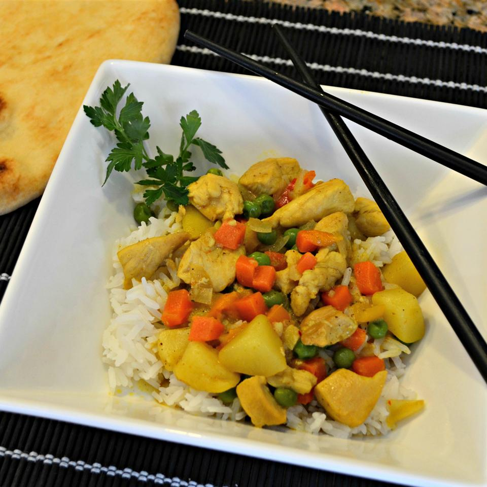

Yellow Curry Chicken with Jasmine Rice

Description:
Yellow curry chicken has long been one of my favorite dishes! It's packed full of flavor and super easy to make. To cook this amazing dish, follow along with the instructions below and enjoy!
Ingredients:
- 1 potato, peeled and cubed, or more to taste
- 3 cups water
- 1 1/2 cups jasmine rice
- 1 tablespoon peanut oil, or more to taste
- 1 tablespoon red curry paste
- 1 teaspoon grated fresh ginger
- 1 clove garlic, minced
- 1/2 (14 ounce) can light coconut milk
- 1/4 teaspoon cayenne pepper, or more to taste
- 1/4 teaspoon paprika, or more to taste
- 1/4 teaspoon ground cumin, or more to taste
- 1 skinless, boneless chicken breast half, cut into cubes
- 1/2 cup chicken stock
- 1/2 sweet onion, diced
- 1/4 green bell pepper, diced
- 1/4 yellow bell pepper, diced
- 1/4 red bell pepper, diced
- 1 carrot, diced
- 3 tablespoons fish sauce
- 2 tablespoons brown sugar
- 1 tablespoon yellow curry powder
- 1 bay leaf
- 1/2 cup frozen peas
Steps:
- Place potatoes into a large pot and cover with salted water; bring to a boil. Reduce heat to medium-low and simmer until slightly tender, about 10-15 minutes. Drain.
- Bring water and rice to a boil in a saucepan. Reduce heat to medium-low, cover, and simmer until the rice is tender and liquid has been absorbed, 20-25 minutes.
- Heat peanut oil in a large deep skillet over medium-low heat; cook and stir red curry paste, ginger, and garlic until fragrant, about 1 minute. Stir coconut milk into curry paste mixture until well blended. Stir cayenne pepper, paprika, cumin, and salt into coconut milk mixture; add chicken and cook until chicken is about half-cooked, 3-5 minutes.
- Stir chicken stock, potatoes, onion, green bell pepper, yellow bell pepper, red bell pepper, carrot, fish sauce, brown sugar, curry powder, and bay leaf into coconut milk-chicken mixture; cook until chicken is no longer pink in the center, about 5 minutes. Add peas to mixture; cover skillet and cook until peas are heated through, about 5 more minutes.
- Serve over cooked jasmine rice. Enjoy!